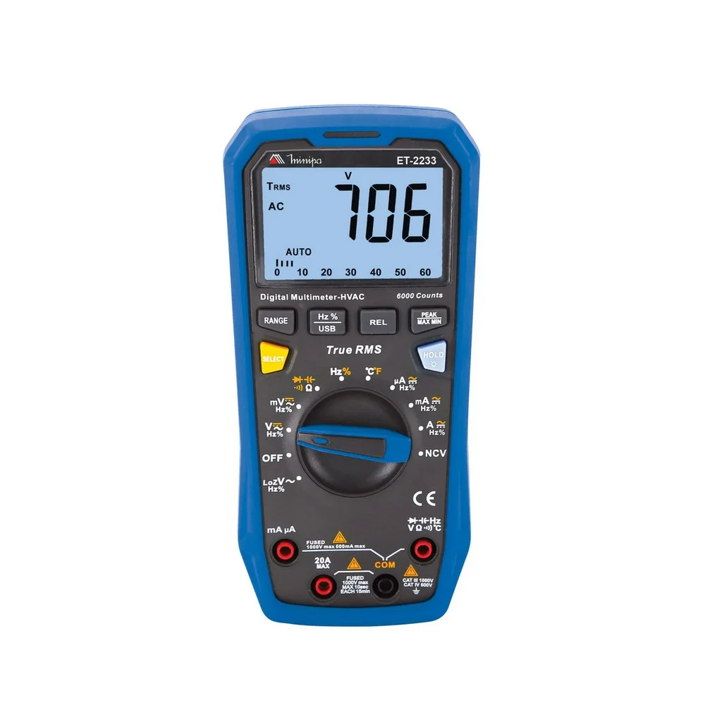

O multímetro é a ferramenta de diagnóstico indispensável para eletricistas, técnicos e engenheiros. Como o próprio nome sugere, ele é um instrumento multimedição, ou seja, reúne em um único aparelho a capacidade de testar e medir diversas grandezas elétricas que, no passado, exigiriam equipamentos separados (como o voltímetro, o amperímetro e o ohmímetro).

Sua aplicação está voltada para a manutenção, testes de segurança e busca de falhas em circuitos. Com ele, é possível medir a tensão de tomadas (Volts), verificar a corrente que passa em um circuito (Ampères), testar a resistência de componentes (Ohms) e realizar o famoso "teste de continuidade" (o teste do bipe), usado para descobrir se um fio condutor está partido por dentro.
Eles são divididos principalmente em dois tipos: o multímetro digital, que é o mais moderno e utilizado, exibindo os valores exatos em uma tela de LCD; e o multímetro analógico, que utiliza um ponteiro mecânico sobre escalas impressas (ainda muito valorizado por técnicos veteranos para observar variações rápidas de sinal). Outra variação importante é o alicate amperímetro, um tipo de multímetro digital focado em medir correntes elétricas altas apenas abraçando o fio, sem precisar cortar o circuito.